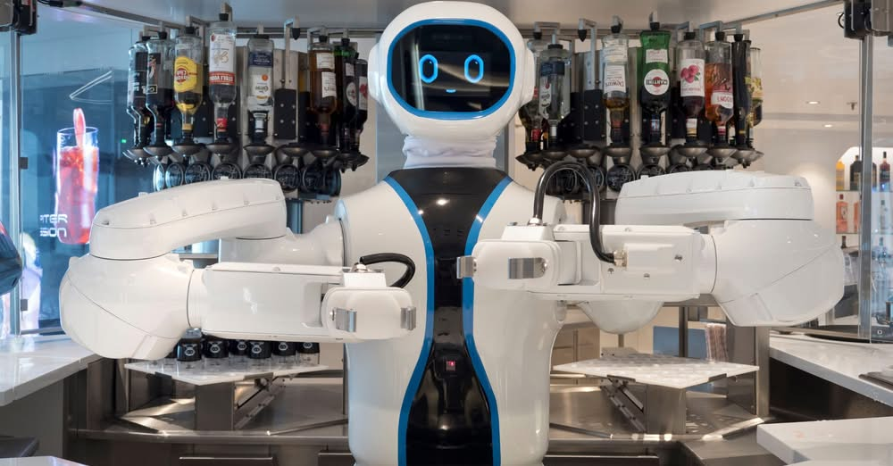

In the realm of technology, announcements often travel at the speed of light, yet their true implications unravel much more slowly. Such is the case with the recent proclamation by Integral AI, a startup out of Japan, which claims to have developed the first AGI-capable model.
While the world was caught up in the latest smartphone releases and software updates, a quieter, yet potentially seismic shift was announced in the field of artificial intelligence. Integral AI, under the leadership of former Google veteran Jad Tarifi, claims to have crossed a threshold that many have speculated about but few have approached. This development, however, has largely flown under the radar of mainstream tech discussions.
Such announcements carry with them a sense of cautious intrigue, as they challenge our understanding of what machines can achieve. While not yet the subject of dinner table conversations, the implications of this claim could ripple through various facets of society in time.
The term 'AGI-capable' suggests a level of artificial intelligence that mirrors human cognitive abilities, a concept that has long been a staple of science fiction more than reality. The claim by Integral AI, therefore, invites both skepticism and curiosity. What exactly makes their model 'AGI-capable' remains under wraps, as scientific validation from external sources is yet to be seen.
At its core, AI technology has been about pattern recognition and data processing. The leap to AGI implies an ability to understand, reason, and adapt in ways that current AI models—including those used in your car stereo or smartphone—cannot. This shift is not just a technical milestone but a philosophical one, questioning the boundaries between human and machine cognition.
Yet, without peer-reviewed evidence or transparent demonstrations, we remain in the realm of speculation. The mechanics of this shift, if indeed it is occurring, are obscured by proprietary claims and the competitive nature of tech development.
The potential advent of AGI-capable technology could redefine industries, from healthcare to finance, through automation and enhanced decision-making capabilities. For individuals, this might translate to improved services and new conveniences, as machines take on more complex tasks that previously required human oversight.
However, these benefits come with caveats. The ethical considerations of AGI are profound, touching on issues of job displacement, privacy, and the fundamental question of machine autonomy. The balance between innovation and societal impact is delicate, and the path forward demands careful navigation.
Moreover, the limitations of current technology must temper expectations. As exciting as the prospect of AGI is, it remains a fledgling concept, bound by the need for robust validation and responsible implementation. The road from claim to reality is long, and each step must be taken with deliberate caution.
If Integral AI's claim holds water, we stand on the cusp of a new era in artificial intelligence—one that could subtly, yet profoundly, shift our interaction with technology. The future trajectory of AGI involves not just technological evolution but also cultural and ethical considerations that will shape its integration into daily life.
While it is tempting to rush towards a future painted in broad strokes of innovation, the pace of this journey will likely be measured. The quiet unveiling of AGI capabilities invites us to engage in thoughtful dialogue about the kind of future we wish to build, ensuring that progress aligns with human values and societal needs.
Dr.WinMac explores the infrastructure and automation changes that affect everyone, explained without jargon.
Back to Blog